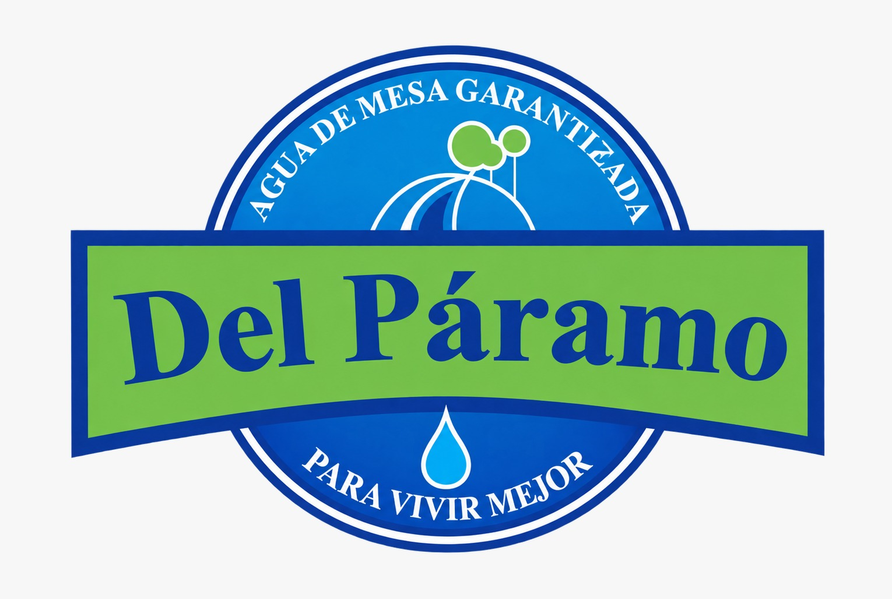
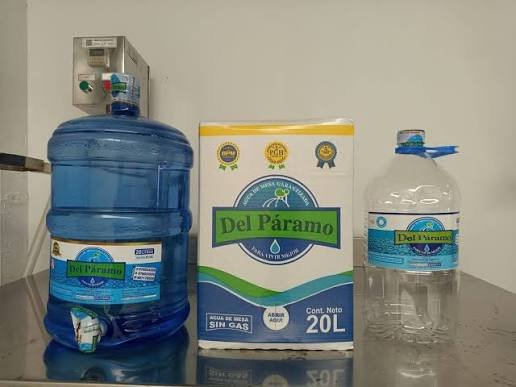
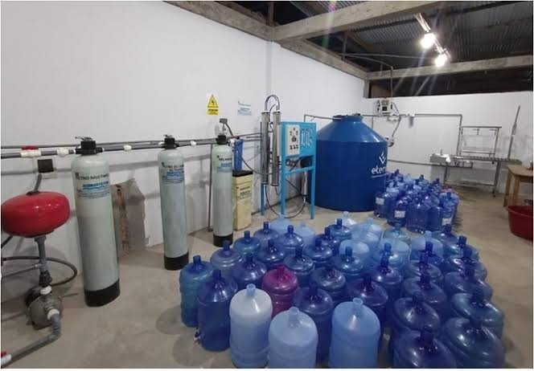
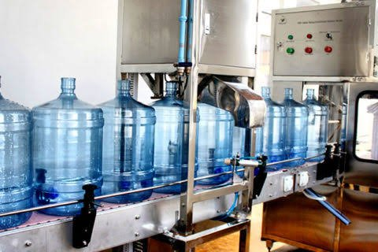
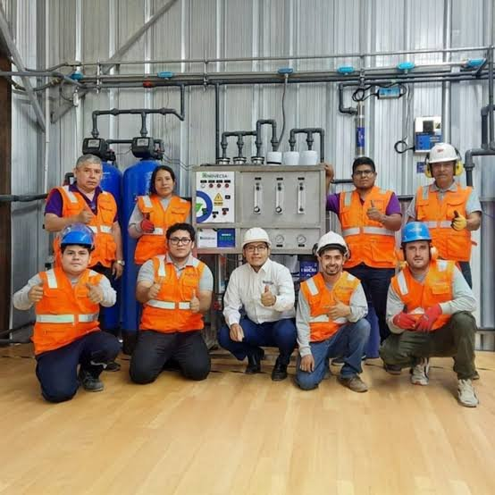

Distribuimos agua Del Páramo a empresas y familias de toda Lambayeque, con entrega a domicilio sin costo adicional.

Agua de mesa ozonizada y purificada, con un nivel de pureza del 98 %, elaborada con un proceso técnico y riguroso.
Purificación y ozonización del agua. Control de calidad de pH, TDS y dureza, y almacenamiento en tanque de acero de grado alimentario.
Prelavado, lavado interno y externo, enjuague y esterilización de cada envase antes de llenarlo.
Llenado, tapa, precinto de seguridad, fecha de producción y vencimiento, etiqueta y control final de calidad.


Contamos con certificación sanitaria DIGESA y certificados BPM (Buenas Prácticas de Manufactura) y HS (Higiene y Salubridad).
Entrega a domicilio incluida. Sin pedido mínimo.
Recarga y entrega a domicilio de bidones retornables. Ideal para el consumo diario familiar y empresarial.
Alternativa sostenible que reduce el uso de plástico rígido. Válvula sellada, cómoda e higiénica.
El tamaño perfecto para familias pequeñas y refrigeradoras; más ligero y fácil de manipular.
Equipos de pedestal o eléctricos para facilitar el consumo en oficinas y hogares. Consulte disponibilidad y precios.
Agua Del Páramo (Distribuciones del Páramo E.I.R.L.) inició operaciones el 29 de junio de 2019 en Pimentel, con 3 vehículos y una venta de 200 a 250 bidones diarios. Gracias a la promoción, a mejoras en procesos y a la renovación de equipos, hoy cuenta con 15 trabajadores, 7 vehículos y maquinaria remodelada, y comercializa entre 700 y 860 bidones al día.
Atendemos a familias, bodegas, minimarkets, entidades bancarias y financieras, molineras y agroindustrias.
Proporcionar a nuestros clientes agua de la más alta calidad, siguiendo procesos y procedimientos impecables con la más alta tecnología del mercado.
Liderar la producción y distribución regional de agua ozonizada y purificada, brindando la máxima calidad y pureza.

Elige producto y cantidad: se abrirá WhatsApp con tu mensaje listo.
Teléfono / WhatsApp: +51 997 170 509
Dirección: Urb. Villa Los Sauces, Mz. – Lt. 23, Pimentel
Horario: Lunes a viernes, 8:30 a.m. a 7:00 p.m.
Sábados y domingos, hasta el mediodía.
Cobertura: toda Lambayeque